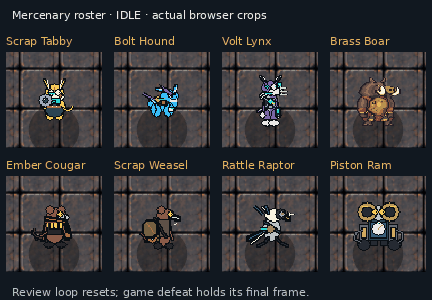

Mercenary animation review
Eight authored 48×48 actors, shown through the registered Phaser animation clips. Select an actor and viewport, then inspect every captured frame at its 96×96 CSS-pixel crop and at 3× enlargement.
Roster loop preview
A convenience playback made from the captured phone crops. Individual registered clip frames above remain the review evidence.

Design direction references
These are design-direction references; they do not mark any runtime actor as owner-approved.
- Scrap Tabby and Bolt Hound: Epic 13 final actor direction board.
- Volt Lynx: canonical Lynx direction · Figma node 113:2.
- Brass Boar, Ember Cougar, Scrap Weasel, Rattle Raptor, and Piston Ram: canonical roster board (columns 1–5) · Figma node 91:2 / 92:2.


Tabby and Hound point to the recorded final-actor-direction image; no separate Figma node is claimed for those two here.
Capture provenance and registered clip facts
Loading…
The full native sources, runtime exports, canonical reference paths, and SHA-256 values are catalogued in source-inventory.json. The evidence manifest and frame images are expected beside this page using actor/profile/mode relative paths.